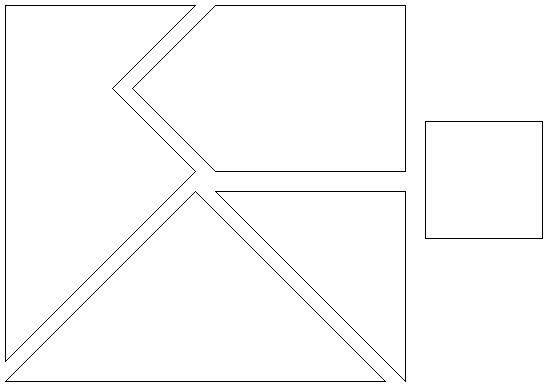
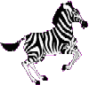

Klik hier om onze sponsor te bezoeken!
Hersen-Krakers
|

|
De puzzels zijn gemarkeerd met sterren ( ) die de moeilijkheidsgraad van de betreffende puzzle aangeven.
) die de moeilijkheidsgraad van de betreffende puzzle aangeven.
![[TERUG]](left.gif) terug naar de hoofd-puzzelpagina.
terug naar de hoofd-puzzelpagina.

i.
Bevrijdende Brug 
Vier mannen willen over een brug en ze bevinden zich
allemaal aan dezelfde kant. Het is nacht en ze hebben slechts één
zaklamp bij zich. Tevens kunnen er maximaal twee mannen tegelijk over de brug,
en elk groepje (van één of twee personen) dat de brug over gaat,
moet de zaklamp bij zich hebben.
De zaklamp zal heen en weer moeten worden gebracht, want hij kan niet worden
gegooid, enz. Elke man heeft een verschillende snelheid. Een koppel zal dus
samen net zo lang nodig hebben als de langzaamste van hen twee. Man 1 heeft
1 minuut nodig om de brug te passeren, man 2 heeft 2 minuten nodig, man 3 heeft
5 minuten nodig, en man 4 heeft 10 minuten nodig. Bijvoorbeeld, als man 1
en man 3 samen de brug oversteken, zullen ze daar 5 minuten voor nodig hebben.
De Vraag:
Hoe kunnen de mannen de brug passeren in 17 minuten?
Het Antwoord:
 Klik hier!...
Klik hier!...
![[OMHOOG]](back.gif) terug naar de index
terug naar de index
ii.
Alfabetblokken
Molly heeft vier alfabetblokken.
Elke zijde van deze blokken is bedrukt met een andere letter;
in totaal zijn er dus 24 letters.
Molly heeft ontdekt dat ze met deze blokken de volgende
(Engelse) woorden kan spellen:
BOXY, BUCK, CHAW, DIGS, EXAM, FLIT,
GIRL, JUMP, OGRE, OKAY, PAWN, ZEST
De Vraag:
Welke letters zitten op welk blok?
Het Antwoord:
Klik hier!...
terug naar de index
iii.
Wetende Wiskundigen
Twee gehele getallen, m en n, zijn gekozen. Beide zijn ongelijk aan 1 en de
som van beide is minder dan 100. Het product, m × n, wordt aan wiskundige X
gegeven. De som, m + n, wordt aan wiskundige Y gegeven. Vervolgens voeren beide
wiskundigen het volgende gesprek:
X: "Ik heb geen idee wat jouw som is, Y."
Y: "Je vertelt me niks nieuws. Ik wist al dat je dat niet wist."
X: "Aha! Maar dan weet ik wat jouw som moet zijn, Y!"
Y: "En nu weet ik ook wat jouw product is, X!"
De Vraag:
Wat zijn m en n?
Het Antwoord:
Klik hier!...
terug naar de index

iv.
Drie Deuren...
Je doet mee aan een quiz en de quizmaster laat je
drie gesloten deuren zien. Hij vertelt dat er achter precies één
van deze deuren een prijs verborgen zit, en dat er achter de andere deuren niets
zit. Je kiest één van de deuren uit, maar voordat je hem open maakt
wijst de quizmaster bewust één van de resterende twee deuren aan,
en vertelt dat er niets achter de betreffende deur zit (en hij laat dit ook zien).
Vervolgens biedt de quizmaster je de mogelijkheid aan om je keuze van deur te
veranderen naar de andere overgebleven dichte deur.
De Vraag:
Kun je het beste bij je oorspronkelijke keuze
blijven, of kun je beter van deur verwisselen?
Het Antwoord:
Klik hier!...
terug naar de index
v.
Henk & Helma
Helma is net zo oud als Henk zal zijn wanneer
Helma twee keer zo oud is als Henk was toen Helma half zo oud was als
de som van hun huidige leeftijden.
Henk is net zo oud als Helma was toen Henk half zo oud was
als hij over 10 jaar zal zijn.
De Vraag:
Hoe oud zijn Henk en Helma?
Het Antwoord:
Klik hier!...
terug naar de index
vi.
Vierkant uit Vijf
De vijf stukken die hieronder staan afgebeeld kunnen
samen één vierkant vormen.

De Vraag:
Hoe moeten de stukken dan tegen elkaar aan worden gelegd?
Een Hint:
Druk het plaatje af, en knip de stukken uit,
want het is moeilijker dan het lijkt!...
Het Antwoord:
Klik hier!...
terug naar de index

vii.
Munten Wegen
We hebben 12 munten en een balans. 11 munten hebben
hetzelfde gewicht, maar één van de munten heeft een ander
gewicht (zwaarder óf lichter, maar we weten niet of die zwaarder
dan wel lichter is!). Je mag drie wegingen doen om
te achterhalen welke munt een afwijkend gewicht heeft
en daarbij bovendien te bepalen of de afwijkende munt zwaarder of lichter is.
De Vraag:
Hoe moet je de drie wegingen doen om de afwijkende munt te vinden
en daarbij bovendien te bepalen of de afwijkende munt zwaarder of lichter is?
Het Antwoord:
Klik hier!...
terug naar de index

viii.
Munten Stapelen
Je hebt een onbeperkt aantal munten met een diameter
d en maakt er een stapel van. Het doel is de
bovenste munt zover mogelijk uit te laten steken.
De Vraag:
Wat is de maximale uitwijking (de afstand tussen het centrum van de bovenste en het centrum van de onderste munt)?
Het Antwoord:
Klik hier!...
terug naar de index
ix.
3 Hoofden & 5 Hoeden
In een klein afgelegen dorp zitten drie onschuldige
mannen in de gevangenis. Op zekere dag neemt de gemene bewaarder hen mee
naar buiten, en plaatst hen in een rij op drie stoelen, zodanig dat man
C zowel man A als man B kan zien, man B alleen
man A kan zien, en man A geen van de overige twee mannen kan zien.
De bewaarder toont hen vijf hoeden, waarvan er twee zwart zijn, en drie wit.
Vervolgens blinddoekt hij de mannen, plaatst op ieders hoofd een van de hoeden,
en verwijdert de blinddoeken weer. De bewaarder vertelt de drie gevangenen dat,
als een van hen in staat is om de kleur van zijn eigen hoed binnen een minuut
te achterhalen, zij alle drie zullen worden vrijgelaten. Zo niet, dan worden
ze alle drie terechtgesteld. Geen van de drie gevangen kan zijn eigen hoed zien,
zij mogen niet met elkaar praten, en zij zijn alle drie zeer intelligent.
Na 59 seconden roept man A de (juiste) kleur van zijn hoed!
De Vraag:
Wat is de kleur van man A's hoed, en hoe
weet hij dat?
Het Antwoord:
Klik hier!...
terug naar de index

x.
Zoek de Zebra
Er zijn 5 huizen, elk huis heeft een unieke kleur, en elke eigenaar is van een andere nationaliteit. Elke eigenaar
heeft een verschillend huisdier, drinkt een ander drankje, en rookt andere sigaretten. De Engelsman woont in het
rode huis, de Zweed heeft een hond, en de Deen drinkt thee. Het groene huis staat links van het witte huis. In het
groene huis wordt koffie gedronken. De man die Pall Mall rookt heeft vogels. In het gele huis wordt Dunhill gerookt.
In het middelste huis wordt melk gedronken. De Noor woont in het eerste huis. De man die Blend rookt
woont in het huis naast het huis met katten. In het huis naast het huis waar ze een paard hebben, wordt Dunhill
gerookt. De man die Blue Master rookt, drinkt bier. De Duitser rookt Prince. De Noor woont naast het blauwe
huis. In het huis naast het huis waar Blend wordt gerookt, wordt water gedronken.
De Vraag:
Wie bezit een zebra?
Het Antwoord:
Klik hier!...
terug naar de index
xi.
Kleurrijke Kabouters
In een afgelegen donker bos leeft een bevolking van
400 hoog-intelligente kabouters. De kabouters lijken allemaal op elkaar,
maar onderscheiden zich in het feit dat ze of een blauw mutsje of een rood
mutsje op hebben. Er zijn 250 kabouters met een rood mutsje en 150 kabouters
met een blauw mutsje. Frappant is dat de kabouters dit zelf niet
weten en dat geen van de kabouters weet wat voor kleur mutsje hij/zij op
heeft (er zijn bijvoorbeeld geen spiegels in dit bos). De kabouters
weten echter wel dat er tenminste één kabouter is met
een rood mutsje.
Nu wordt er gedurende een bepaalde tijd van het
jaar dagelijks een groots feest georganiseerd, waar aanvankelijk alle kabouters
aanwezig zijn. Echter, dit feest is alleen bedoeld voor kabouters met blauwe
mutsjes. Kabouters met rode mutsjes worden geacht zodra ze weten dat ze
een rood mutsje hebben, nooit meer op het feest te verschijnen.
De Vraag:
Na hoeveel dagen zijn er geen kabouters met rode mutsjes meer op het feest?
Het Antwoord:
Klik hier!...
terug naar de index
xii.
Piraten Poen
Een piratenschip verovert 1000 goudstukken.
De poen moet verdeeld worden over de vijf piraten op het schip: 1, 2, 3, 4, en 5
in volgorde van rang. De piraten hebben de volgende belangrijke eigenschappen, ze zijn:
- oneindig slim,
- bloeddorstig, en
- gretig.
Startende bij piraat 5, mogen ze ieder een voorstel doen voor het verdelen van de poen.
Elk voorstel kan worden geaccepteerd als een meerderheid van de
piraten het met het voorstel eens is. Wordt het voorstel echter niet geaccepteerd,
dan wordt de piraat die het voorstel deed overboord gegooid, en mag de volgende in rang een voorstel doen...
De Vraag:
Welk voorstel moet piraat 5 doen (zonder van boord te worden gegooid)?
Het Antwoord:
Klik hier!...
terug naar de index
xiii.
Dubbel Doosje
Iemand laat je twee doosjes zien, en hij vertelt er bij
dat er in één van de twee doosje twee keer zo veel zit als in het
andere doosje, maar hij vertelt niet welk doosje dat is. Vervolgens laat hij
je één van de twee doosjes uitkiezen, hij maakt het doosje open,
en er blijkt 10 euro in te zitten. Vervolgens geeft hij je de kans om alsnog
voor het andere doosje te kiezen (en dus de tien euro uit het eerste doosje
te laten schieten), want misschien zit er in dat andere doosje wel twee keer
zo veel.
De Vraag:
Kun je het beste voor dat andere doosje
kiezen, of kun je beter bij je oorspronkelijke keuze blijven?
Een Hint:
In een situatie waarbij je tien euro
hebt, en je zou deze met een kans van een 1/2 kunnen verdubbelen, of met een kans
van eveneens een 1/2 kunnen halveren, dan verwacht je gemiddeld 1/2 * 20 euro
+ 1/2 * 5 euro = 12 1/2 euro over te houden (dus een rijksdaalder extra te
hebben)!...
Het Antwoord:
Klik hier!...
terug naar de index
xiv.
Het Truel
Op een vroege morgen komen drie rivalen op
een open plek in het bos bijeen om een geschil te beslechten middels
het pistool. Een soort duel dus, maar dan van drie personen A, B en C.
De spelregels zijn als volgt:
- Er wordt geloot wie het eerste, tweede en
derde schot mag lossen.
- Vervolgens zal voortdurend in dezelfde volgorde
gevuurd worden tot er nog maar één persoon in leven is.
- Ieder mag zelf beslissen op wie geschoten wordt.
- Ieder weet dat A in 100%, B in 80% en C in 50% van
alle gevallen dodelijk raak schiet.
- Ieder kiest de beste strategie.
- Niemand wordt gedood door een verdwaald schot.
De Vraag:
Wie heeft de grootste kans om het duel te overleven, en hoe groot
is die kans precies?
Het Antwoord:
Klik hier!...
terug naar de index
xv.
Veertien Vijftien
Hieronder zie je een vierkant met vijftien genummerde, schuifbare blokjes en
een lege plaats in de rechter benedenhoek.
De blokjes zijn in de juiste volgorde geplaatst, behalve de nummers
"14" en "15", die omgewisseld zijn.
De Vraag:
Hoe moeten de blokjes verplaatst worden zodat alle blokjes in de
juiste volgorde staan, met de lege plaats wederom in de rechter
benedenhoek?
Een Hint:
Door te klikken op een blokje naast de lege plaats, verschuift het blokje
naar de lege plaats. Door te klikken op een blokje uit dezelfde rij of
kolom als de lege plaats, kan je meerdere blokjes ineens verschuiven.
Het Antwoord:
Klik hier!...
Nog een Vraag:
Hoe moeten de blokjes verplaatst worden zodat alle blokjes in de
juiste volgorde staan, maar met de lege plaats in de linker
bovenhoek (zie hieronder)?
Nog een Antwoord:
Klik hier!...
terug naar de index
xvi.
Kokosnoten Kraken
Vijf matrozen overleven een schipbreuk en zwemmen naar een klein eiland waar ze alleen een
kokosnotenboom en een aap aantreffen.
De matrozen verzamelen alle kokosnoten en leggen ze in een stapel onder de boom.
Uitgeput besluiten ze om pas de volgende ochtend de kokosnoten te verdelen.
Om een uur 's nachts wordt de eerste matroos wakker.
Hij realiseert zich dat hij de anderen niet kan vertrouwen en besluit zijn deel alvast te nemen.
Hij verdeelt de kokosnoten in vijf gelijke stapels, maar houdt daarbij
een kokosnoot over.
Hij geeft die kokosnoot aan de aap, verbergt zijn eigen kokosnoten
(één van de vijf stapels),
en plaatst de rest van de kokosnoten
(de andere vier stapels)
terug onder de boom.
Om twee uur 's nachts wordt de tweede matroos wakker.
Zich niet bewust van het feit dat de eerste matroos zijn deel al heeft weggenomen,
verdeelt ook hij de kokosnoten in vijf gelijke stapels en houdt daarbij ook
een kokosnoot over, die hij aan de aap geeft.
Dan verbergt hij zijn kokosnoten (één van de vijf stapels),
en plaatst de rest van de kokosnoten
(de andere vier stapels)
terug onder de boom.
Om drie, vier en vijf uur 's nachts worden achtereenvolgens de
derde, vierde en vijfde matroos wakker en voeren dezelfde handelingen uit als de
eerste twee matrozen.
's Morgens, als ze opstaan, proberen ze allemaal zo onschuldig mogelijk te kijken.
Geen van de matrozen maakt een opmerking over de gekrompen stapel kokosnoten, en geen van hen
besluit om eerlijk te zijn en toe te geven dat hij zijn deel al genomen heeft.
Ze verdelen de kokosnoten voor de zesde maal in vijf gelijke stapels en houden daarbij
alweer een kokosnoot over, die ze aan de aap geven.
De Vraag:
Wat is de kleinste hoeveelheid kokosnoten waaruit de oorspronkelijke stapel kan hebben bestaan?
Het Antwoord:
Klik hier!...
terug naar de index
xvii.
Cijfers en Punten
Dit is een beroemd probleem uit 1882 waarbij voor
de beste oplossing een prijs van $1000 werd uitgeloofd. De opgave is
om de zeven cijfers 4, 5, 6, 7, 8, 9 en 0 en acht punten zodanig te
rangschikken dat een optelling het getal 82 zo dicht mogelijk
benadert. Elk van de cijfers mag slechts éénmaal
gebruikt worden. De punten mogen op twee manieren worden gebruikt: als
decimaalteken (op zijn engels dus!) en als symbool voor een
repeterende breuk. Bijvoorbeeld: de breuk 1/3
mag als
geschreven worden. De punt
boven de drie geeft aan dat dit cijfer eindeloos herhaald wordt.
Als je een groep cijfers wilt herhalen, worden er twee punten
gebruikt: één om het begin van het repeterende deel aan te geven en
één voor het eind ervan. De breuk
1/7 mag dus als
worden geschreven. Merk op dat '0.5' wordt geschreven als '.5'.
De Vraag:
Hoe dicht kun je op deze manier bij het getal 82 komen?
Het Antwoord:
Klik hier!...
terug naar de index

Click Here to Visit our Sponsor
Copyright © 1996-2005. RJE-productions. All rights reserved.